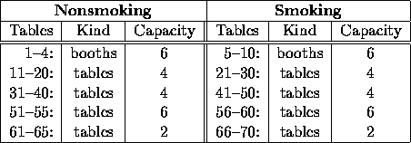
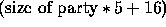

| The Reservation Maker |
Write a program that will assist the receptionist in seating customer parties at tables and booths in a large restaurant. Your program should accept for the receptionist the arrival time, the size of the party, whether the party desires a table or a booth, in the smoking or nonsmoking sections of the restaurant.
For each request in a list of requests, the program should provide a table number and the approximate waiting time before the party can be seated. The restaurant has the following seating characteristics:

Each table of the table groups is portable and can be moved such that as many as five tables of any group may be connected to seat a larger party than any one table could seat. This connection of tables is only possible if the sequential number of the tables to be used are vacant. Thus 2 four-person tables can be joined together to seat a party of 6; 3 four-person table can be joined to seat a party of 8, and so on.
Parties of 1 take 35 minutes, parties of 2 take 47 minutes at the restaurant (service is very predictable), parties of 3 or 4 take 52 minutes, while parties of 5 to 10 take 55 minutes. Parties of greater than 10 take  minutes.
Your program should always assign the lowest booth/table number available. You should also process the requests in the order given and once an assignment is made, not change it.
Your program should accept a sequence of reservation requests (the restaurant requires reservations). Each reservation consists of one line with an integer arrival time (in minutes past 8:00 p.m.), the party size (at least 1), a blank, then an `S' or an `N' (smoking or nonsmoking), a blank, then a `B' or a `T' (booth or table).
For each reservation request which can be satisfied, your program should then print the list of table numbers or the table/booth number and the number of minutes the party will have to wait after their arrival. If a request cannot be satisfied, print `Impossible'.
60 5 N B 0 4 N B 10 3 N B 10 2 N B 13 2 N B 0 6 N B 30 12 N T 60 8 S B
1 0 2 0 3 0 4 0 1 0 2 47 11 12 13 14 15 0 Impossible